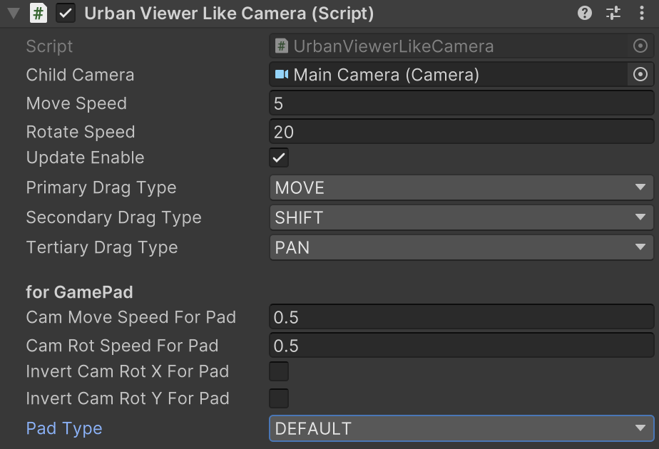

UrbanViewerLikeCamera
マウス、タッチ、ゲームパッドを利用してカメラの前後上下左右の移動操作、左右の旋回操作を行います。
Important
TouchScript パッケージを利用の場合はソースコード内の #define 定義を有効にしてください。
namespace GarageKit
public class UrbanViewerLikeCamera
Inheritance
UrbanViewerLikeCamera -> MonoBehaviour
Inspector
Properties
| member | type | description |
|---|---|---|
| childCamera | Camera | コントロール対象の子階層カメラ |
| moveSpeed | float | 移動速度 |
| rotateSpeed | float | 回転速度 |
| updateEnable | bool | 値更新設定 |
| primaryDragType | DragType | プライマリ入力(左ドラッグ / 1本指操作)の操作対象 |
| secondaryDragType | DragType | セカンダリ入力(右ドラッグ / 2本指操作)の操作対象 |
| tertiaryDragType | DragType | ターシャリ入力(中ドラッグ / 3本指操作)の操作対象 |
| camMoveSpeedForPad | float | ゲームパッド操作時の移動速度 |
| camRotSpeedForPad | float | ゲームパッド操作時の回転速度 |
| invertCamRotXForPad | bool | ゲームパッド操作時の X 回転方向反転設定 |
| invertCamRotYForPad | bool | ゲームパッド操作時の Y 回転方向反転設定 |
| padType | PadType | ゲームパッドタイプ設定 |
Enums
DragType
| enums | description |
|---|---|
| NO_USE | 利用しない |
| MOVE | 前後移動 |
| PAN | 左右旋回 |
| SHIFT | 上下左右移動 |
PadType
| enums | description |
|---|---|
| DEFAULT | 標準コントローラー |
| XBOXONE | XboxOne コントローラー |
Example
- /Scenes/Examples/CameraControllExample.unity